Evidence / 01 · QNB Egypt Digital Banking Experience Transformation
Reimagining QNB Egypt’s digital banking experience.
We redesigned QNB Egypt’s mobile and internet banking apps, from how they’re organised to how they look.


More than a new look.
QNB Egypt’s mobile and internet banking apps needed more than a new look. Over the years, their structure, navigation and interactions had become hard to use.
Our job was to rethink how customers find and use their banking services, make everyday tasks simpler, and build one consistent experience for every customer segment.
Key responsibilitiesTen years of growth had made the apps hard to use.
QNB Egypt’s apps had grown over about ten years. They offered many banking services, but layers of menus and crowded screens made everyday tasks hard to find and finish.
So the questions were bigger than visual style: how to organise many services, how customers move between tasks, and how to keep it easy for every customer segment.
Core challengesComplex information architecture
The apps had many features, but they were hard to find.
Complicated customer journeys
Everyday tasks like transfers, bill payments and managing accounts took more steps than they needed.
Outdated interaction patterns
Some screens relied on older interface conventions, dense layouts and inconsistent interaction structures.
Functional complexity
The apps had to hold many banking services without overwhelming customers.
Multi-segment experience
The system needed to support distinct customer segments while keeping a consistent underlying experience.
Cross-platform consistency
One design base had to work for mobile and internet banking, with tablet proposed for later.
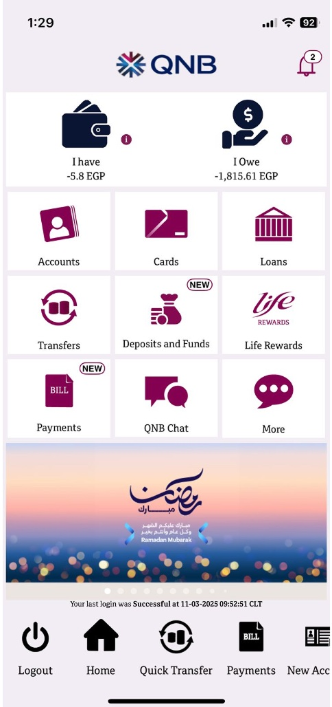
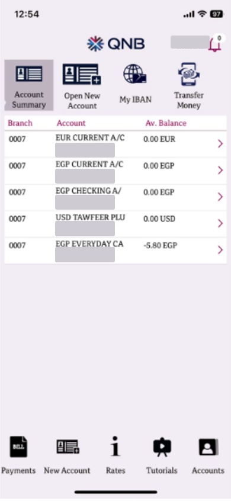
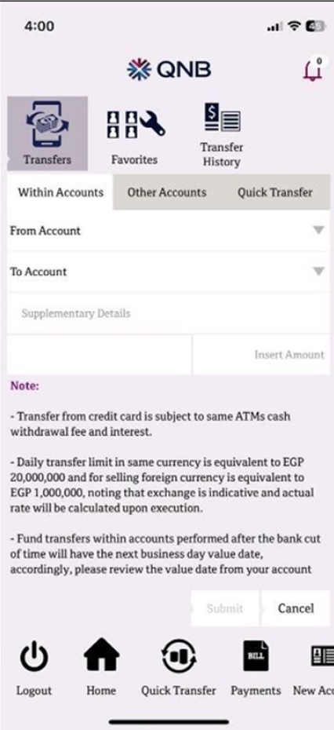
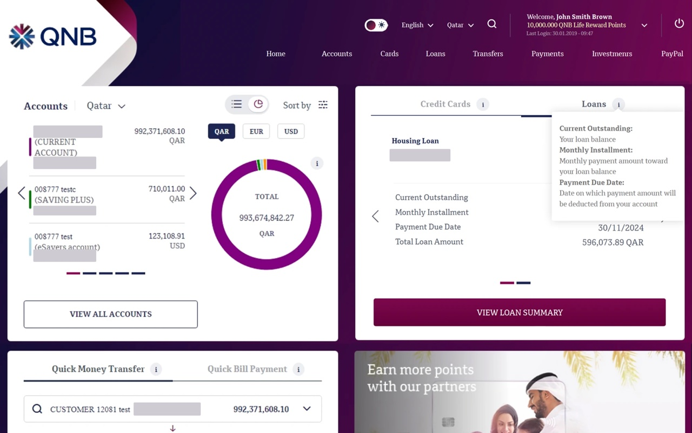
The legacy QNB Egypt mobile app and the legacy QNB internet banking platform. Account and customer numbers masked.
Understanding the old apps first.
We studied the existing QNB Egypt apps, compared them with other banking apps and read customer reviews, to find what needed to change.
Existing product analysis
Reviewed the mobile and internet banking interfaces across the core product areas.
Competitive benchmarking
Navigation, dashboards, transaction flows, account presentation, card management and payments, plus additional digital banking references.
Customer feedback review
Themes observed in available app-store reviews, not formal interviews or usability testing.
- Reported performance issues
- Difficulty completing bill payments
- Feature discoverability challenges
- Account management frustrations
- Feedback about outdated interface patterns
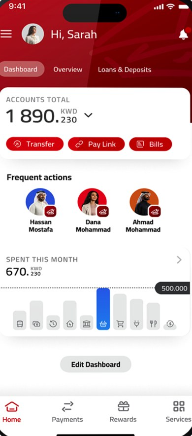

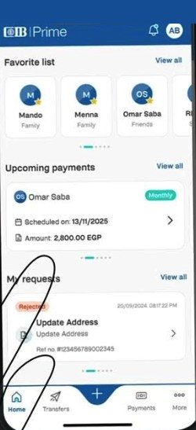
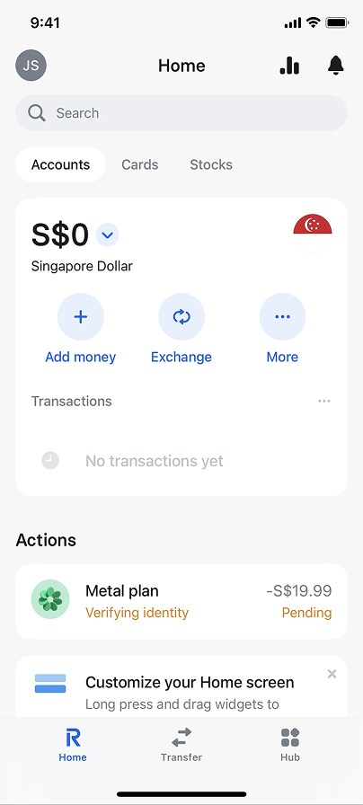
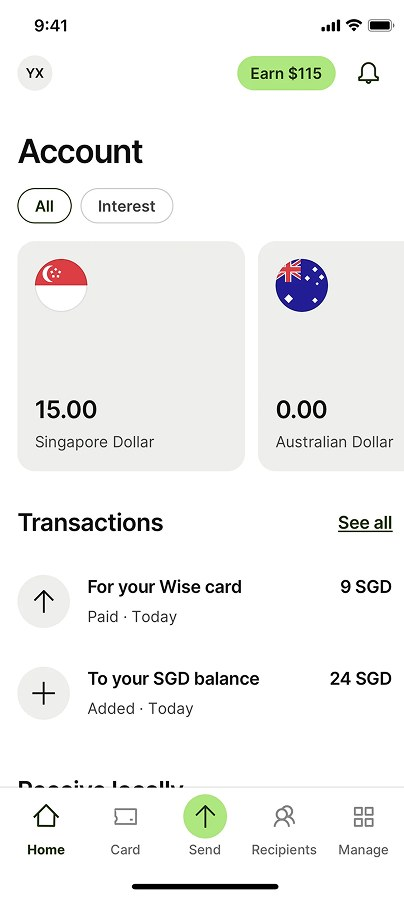
The home screen of QNB Egypt's legacy app beside five benchmarked banking apps.
What reviewers said about each app| App | Performance | Experience | Visual design |
|---|---|---|---|
| QNB Egypt | Reported as slow | Bill payments difficult; features hard to find | Described as outdated |
| Gulf Bank | Login issues; features missing after updates | Worse after updates | Poor UI, contrast issues |
| Attijariwafa Bank | Login issues; app closes after sign-in | Hard to use; missing features | Negative |
| CIB | Noted for acting on feedback | Intuitive navigation | Praised new design |
| Revolut | Easy to use; instant transfers | Seamless login; real-time spend tracking | User-friendly |
| Wise | Generally fast; some delayed transfers | Easy exchange rates and local payments | Intuitive, responsive |
Reviewers praised the benchmarked apps for speed, clear navigation and modern visuals: the three areas where QNB Egypt's reviews were weakest.
Themes from public app-store reviews, summarised per app at the time of research. No ratings or counts.
From what we found to what we’d change.
Instead of fixing screens one by one, we looked for problems that showed up everywhere: features that were hard to find, unclear priorities and tasks that took too long. The takeaways below come from comparing other banking apps.
UX takeaways
- One-tap quick actions for frequent tasks
- A personalised, customisable dashboard
- Clear categorisation of transfers and transactions
- Smart search and filtering for transactions
- Biometric sign-in, with card details revealed only after authentication
Visual design takeaways
- Minimal layouts with balanced whitespace for clear hierarchy
- Modular, clean card interfaces
- Custom icons for faster recognition
- Colour-coded badges for status and urgency
Customer experience opportunities
- A more useful dashboard
- Financial information that is easier to understand
- Better account and card visibility
- Simpler transfers and bill payments
- A consistent experience across segments
- 01
Frequent tasks take the fewest steps. Everyday payments are one tap from home.
Difficulty completing bill payments → Simplify transfers and bill payments
- 02
Organise around what customers want to do, not the bank's product structure.
Feature discoverability challenges → Simplify information architecture and feature discovery
- 03
One pattern, one behaviour: the same component works the same way everywhere.
Feedback about outdated interface patterns → Introduce consistent components and interaction patterns
Designing for different customer segments.
The apps serve different groups of customers. Early ideas covered regular, premium and younger customers. The final design system supports Regular and Private; a third segment, Youth, was proposed.
The goal: the same experience underneath, with a different look for each segment.
Regular
Simple, friendly everyday banking.
Private
A premium look, with a dark theme.
Youth
A proposed experience built around a younger segment’s visual identity. Not approved by the client.
These are customer-segment design explorations, not research-validated personas. Early work used terms such as First/Premium and Youth/Supplementary before the final segment names were set.

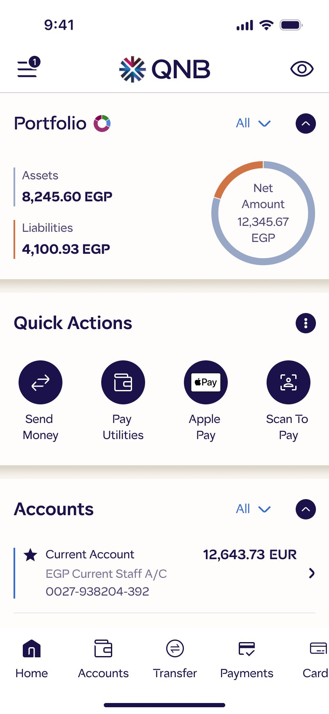
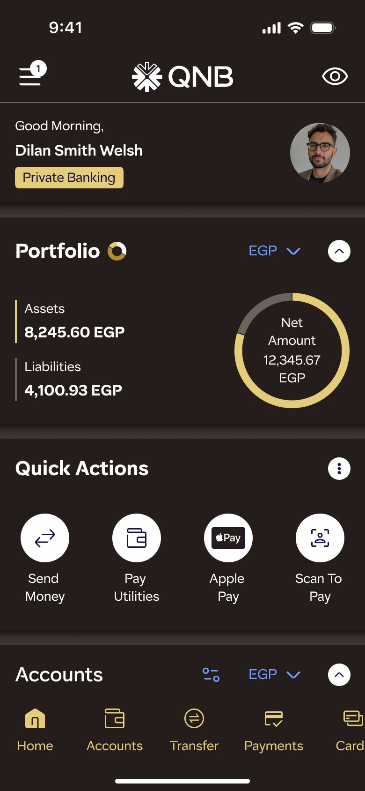
The same screen across segment themes: the same structure, with colour and component treatment adapting.
Making everyday banking easier to navigate.
We tackled the structure first. Instead of redesigning screens one at a time, we planned how content, navigation and tasks fit together.
Key design focus areas- Information architecture
- Reconsidering how banking features and services are organised to improve findability and reduce navigation complexity.
- Dashboard experience
- Improving the hierarchy of financial information, banking services, quick actions and relevant account details.
- Accounts
- Exploring clearer account summaries, grouping, currency information, transaction visibility and contextual actions.
- Transfers
- Clearer categories, quicker access to saved beneficiaries, and fewer steps.
- Bill payments
- Better service discovery and categorisation, with clearer hierarchy between service categories and payment actions.
- Cards
- Improving card presentation, information hierarchy and access to card-management actions.
- Other banking modules
- The same patterns, applied to deposits, loans, investments, rewards, profile and settings.


Revised information architecture: from prelogin to the dashboard hub, then three levels into each module. Condensed from the team’s module IA diagrams.
Bringing QNB’s brand into the apps.
The look follows the QNB Group brand guidelines, which QNB Egypt uses and shared with us. Our work was turning those guidelines into app design: applying the colours, type, icons and visual style to reusable components and segment themes.
The QNB corporate brand identity, logo and brand guidelines were created by QNB Group. This work covers their application to QNB Egypt’s digital products.
![Left: tokens from the QNB Group brand guidelines — six secondary palette colours (Steel Dark, Citrus Dark, Steel, Mint, Pearl, Ocean Dark), QNB Sans EN type styles Heading 3, Subheading 2 and Body 3, and four brand icons. Right: the final QNB Egypt home and transfer screens, with numbered outlines showing where each is used: the portfolio ring in Steel Dark and Citrus Dark, favourites avatars in Steel, Mint, Pearl and Ocean Dark, section headings and account rows in QNB Sans, and the bottom navigation in the brand icon set.](assets/case/qnb/brand-to-product-dark.webp?v=202610231848)
![Left: tokens from the QNB Group brand guidelines — six secondary palette colours (Steel Dark, Citrus Dark, Steel, Mint, Pearl, Ocean Dark), QNB Sans EN type styles Heading 3, Subheading 2 and Body 3, and four brand icons. Right: the final QNB Egypt home and transfer screens, with numbered outlines showing where each is used: the portfolio ring in Steel Dark and Citrus Dark, favourites avatars in Steel, Mint, Pearl and Ocean Dark, section headings and account rows in QNB Sans, and the bottom navigation in the brand icon set.](assets/case/qnb/brand-to-product-light.webp?v=202610231848)
From brand guideline to digital component: QNB Group colour, type and icon tokens, and where each appears in the final QNB Egypt app.
One design system for every segment and platform.
A big part of the work was building a design system from scratch. It had to support several customer segments and themes, and work the same way on mobile and internet banking, with tablet planned for later.
One set of shared components, with small variations for each segment.
Segment × theme architecture| Segment | Light | Dark |
|---|---|---|
| Regular | ✓ | ✓ |
| Private | — | ✓ |
| Youth (proposed) | — | — |
| Platform | Status |
|---|---|
| Mobile banking | Design delivered |
| Internet banking | Design delivered |
| Tablet | Proposed — design phase not started |


Design system foundations: one set of design tokens that switches between Light, Dark and Private modes, with spacing in steps of 8 and a 4-column mobile grid.


Component library: reusable actions, inputs, navigation, feedback and financial components, documented in Figma with usage notes and interaction states.


Segment and theme variations: the same components in Regular light, Regular dark and Private dark. Layout stays identical; only the token mode changes.


One system, two platforms: the same Portfolio, Quick actions and Accounts components adapt from the 4-column mobile grid to the 12-column internet banking grid. Tablet was proposed as future scope; its design phase had not started.
The redesigned mobile and internet banking apps
We brought it all together in the redesigned mobile and internet banking apps. The final designs covered many banking modules and were prepared for client review and developer handoff.
Mobile bankingRecorded from the Figma prototype · plays on view · scroll →
Internet banking


Final internet banking screens: dashboard, accounts, transfers and payments share the same header, navigation and card system as the mobile app.
Module showcase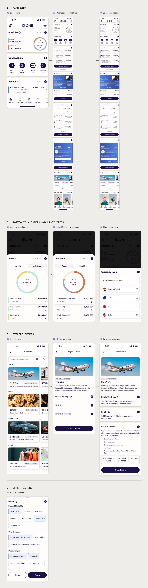
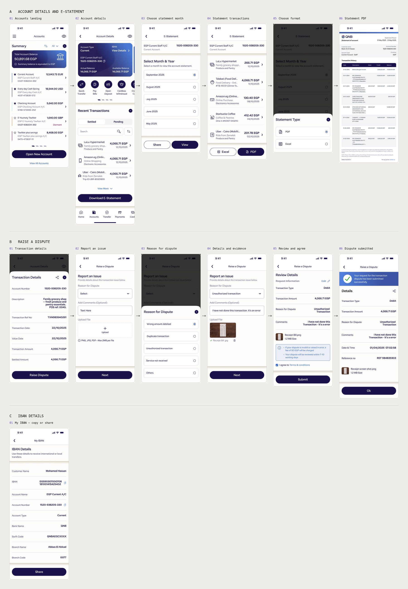


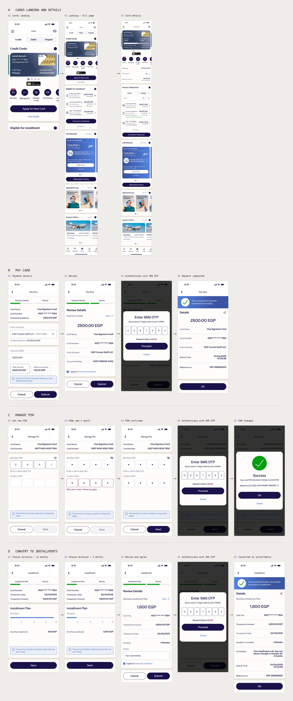
Dashboard
Accounts
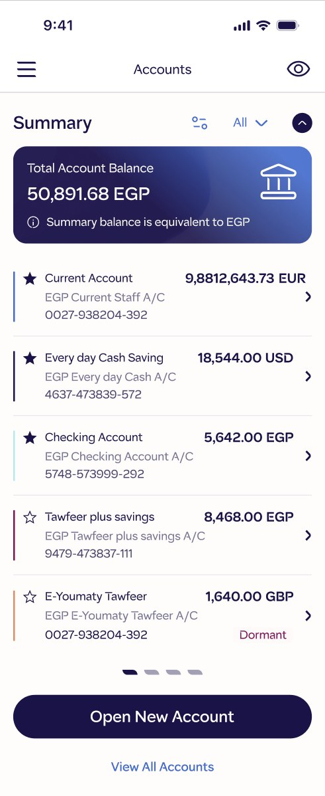
Transfers

Comparable functions, legacy vs redesigned · scroll →
Leading the design process from exploration to delivery.
As Design Lead and Senior Product Designer, I split my time between designing, leading the team and working with the client.
I led a team of four designers and stayed hands-on: designing screens, building prototypes, reviewing work and making key UX decisions. I worked closely with the client to turn requirements and feedback into design directions, ran our internal reviews and kept the work on track.
Design leadership
- Led and coordinated a four-member design team
- Managed design activities, priorities and deliverables
- Reviewed designers’ work before client presentations
- Guided design decisions and aligned the team on objectives
Hands-on product design
- Contributed directly to UX and UI design
- Designed high-fidelity screens
- Built interactive prototypes for client reviews
- Took part in explorations and interaction decisions
Stakeholder management
- Regular client meetings and project catch-ups
- Presented design work and prototypes
- Managed evolving requirements and design changes
- Coordinated feedback between client and team
Delivery coordination
- Design documentation and progress tracking
- Design decision and feedback records
- Coordinated reviews and delivery activities
- Tracked requirements, dependencies, changes and issues
We used AI tools where they saved time. Figma AI and plugins helped us explore layouts faster. ChatGPT helped with brainstorming, reviewing flows and writing UX copy. AI also helped with translation and with creating or editing images.
The tools helped, but the team made every design decision and checked the quality.


The design delivery file: one unified prototype per module for client reviews, a page status system to track progress, and redlines for developer handoff. One page name is masked.
What we delivered.
We delivered the full designs for QNB Egypt’s mobile and internet banking apps, plus a design system that supports several customer segments and light and dark themes.
Confirmed outcomes- Mobile banking design delivery completed
- Internet banking design delivery completed
- Design system created from scratch
- Customer segments supported: Regular and Private
- Light and dark themes defined for applicable segments
- High-fidelity designs and prototypes prepared for client reviews
- Youth segment — proposed; not approved
- Tablet — proposed; design phase not started
One system, two platforms
Mobile and internet banking designed from a single design system, with light and dark themes defined per segment.
Every payment ends the same way
Transfers, bill payments, card payments, PIN changes and installments share one rhythm: review, authenticate, then a confirmation with a reference number.
Balances hidden on demand
One eye toggle masks amounts across the dashboard, accounts and cards, so the app can be opened safely in public.
Benchmark takeaways in the final design
Quick actions on the home screen, transaction search and filters, and saved favourites for transfers reflect the UX takeaways from the competitive review.
If I did this again, I’d push for usability sessions with real QNB Egypt customers early on. Reviews and benchmarking showed us where the problems were, but not how people actually moved through the app.
On a long project, leading the team and working closely with the client mattered as much as the design work.